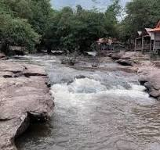
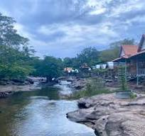

ຍ້ອນກັບ


I.ແຫຼ່ງທ່ອງທ່ຽງ ຕາດມູນ.
👉ຕາດມູນແມ່ນສະຖານທີ່ທ່ອງທ່ຽວແຫ່ງໜຶ່ງຂອງນະຄອນຫຼວງວຽງຈັນ ທີ່ຕັ້ງຢູ່ເຂດບ້ານ ໃຫມ່ ເມືອງ ສີໂຄດຕະບອງ ຊຶ່ງສະຖານທີ່ແຫ່ງນີ້ແມ່ນເປັນຕາດສຳລັບໃຫ້ທຸກຄົນໄປພັກຜ່ອນຍາມທີ່ພັກວຽກ ຫຼື ໄປຫຼີ້ນແບບເປັນຫມູ່ຄະນະ ໃນມື້ພັກຜ່ອນຕ່າງໆ ຊຶ່ງສະຖານທີ່ດັ່ງກ່າວແມ່ນສີຕູບ ແລະ ມີອາຫານໄວ້ຄອຍບໍລິການສຳລັບຄົນທີ່ບໍ່ໄດ້ກຽມອາຫານມີ ຕາດແຫ່ງນີ້ອ້ອມຮອບໄປດ້ວຍທຳມະຊາດ ແຕ່ກໍ່ຕິດກັບທາງໃຫຍ່ ເຮັດໃຫ້ເດີນທາງໄດ້ສະດວກ ແຕ່ເຮັດໃຫ້ສະຖານທີ່ແຫ່ງນີ້ບໍ່ໄດ້ສຳຜັດກັບທຳມະຊາດໄດ້ຢ່າງແທ້ຈິງ
ກົດບ່ອນນີ້ເພື່ອກັບຄືນ